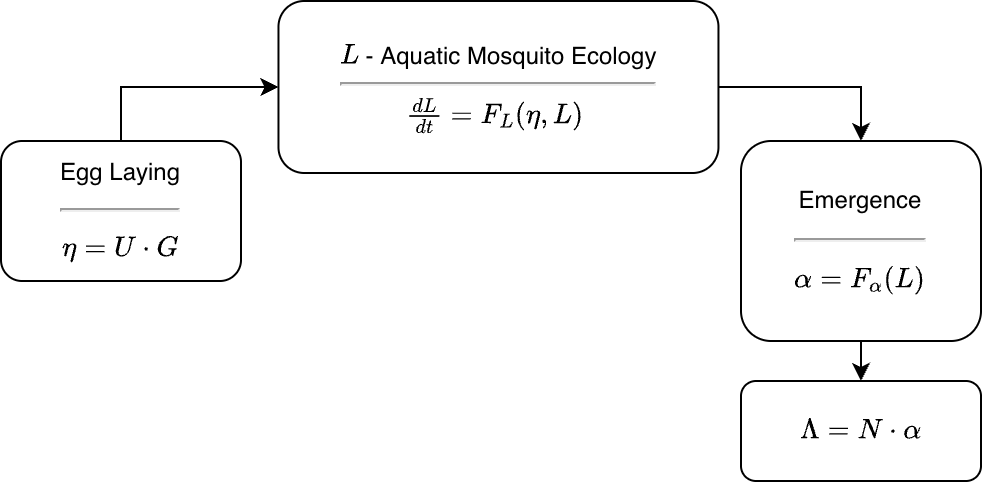

The L Component
Models for Immature Mosquito Ecology
Source:vignettes/L-interface.Rmd
L-interface.RmdThe L component models aquatic mosquito ecology across larval habitats. This vignette describes its interfaces and the methods implemented by an L module.
The L component is linked to adult mosquito ecology
through egg laying and emergence. F_eggs returns the number
of eggs laid by adult mosquitoes in each patch, denoted by \(G\). The egg-laying interface distributes
those eggs among habitats to produce the habitat-specific input \(\eta\). The L module then
computes its dynamics and the emergence rate \(\alpha\) in each habitat. The emergence
interface aggregates \(\alpha\), using
the habitat membership matrix, into the patch-specific adult emergence
rate \(\Lambda\).
The two interfaces are illustrated below.

Module methods
Methods dispatch on the class of xds_obj$L_obj[[s]],
where s is the vector-species index. Model-specific methods
use s consistently. There is no fixed number of methods
that every module must implement: implement the dynamics method that
matches the model and the outputs and setup methods needed by its
interfaces.
Dynamics
Implement one of the following:
-
dLdt.Lnamefor a continuous-time model. It receivest, the dependent-variable vectory,xds_obj, ands, and returns derivatives in the same order as the model’s state variables. -
Update_Lt.Lnamefor a discrete-time model. It receives the same arguments and returns the updated state variables in state-variable order.
The functions are used by the continuous-time or discrete-time solver pathways, respectively.
Bionomics
LBionomics.Lname evaluates baseline bionomic parameter
values at time t and resets their effect sizes.
LEffectSizes.Lname applies vector-control effect sizes to
those baseline values. Both methods receive t,
y, xds_obj, and s, and return the
updated xds_obj.
Egg input and emergence output
The egg-laying interface computes patch-level adult egg production
\(G\) using F_eggs, then
distributes eggs to aquatic habitats. If \(O\) is the habitat-by-patch egg-laying
matrix, \(Q\) is the availability of
modeled habitats in each patch, and \(Q_{\mathrm{all}}\) is total egg-laying
availability, the habitat-level input is
\[ \eta = O\left(G \circ \frac{Q}{Q_{\mathrm{all}}}\right), \]
where \(\circ\) denotes element-wise multiplication. Thus, \(\eta\) has one value per habitat and is supplied to the L dynamics.
F_emerge.Lname returns the adult emergence quantity
\(\alpha\), with one value per habitat.
It is a rate for a continuous-time model and a number for a
discrete-time model. The emergence interface aggregates habitat
emergence by patch using the habitat membership matrix \(N\):
\[ \Lambda = N\alpha. \]
Model object, parameters, and state variables
make_L_obj_Lname creates the module-specific
L object, and setup_L_obj.Lname attaches
it to the full model at xds_obj$L_obj[[s]]. The setup
method also receives the habitat-to-patch membership vector
and initializes shared habitat interfaces.
-
get_L_pars.Lnamereturns the module’s parameters. -
change_L_pars.Lnamechanges supported parameter values using the named listoptions. -
setup_L_ix.Lnameassigns indices to the module’s state variables;get_L_ixretrieves the stored indices. -
get_L_vars.Lnameextracts named states fromy. -
parse_L_orbits.Lnameextracts named states and any model-specific derived quantities from the solver output matrix.
The number of state values is generally based on
nHabitats, not nPatches. The
membership vector associates each habitat with a patch.
Initial values and checks
make_L_inits_Lname returns a named list of default
initial values for all state variables. setup_L_inits.Lname
stores the values at xds_obj$L_obj[[s]]$inits;
get_L_inits and change_L_inits.Lname inspect
and update them.
setup_skillset_L.Lname records the module’s capabilities
and limitations. check_L.Lname performs any module-specific
consistency checks required before solving.
The basicL example
The basicL module tracks larval density \(L\) in each aquatic habitat. It uses the
habitat-level egg input \(\eta\),
maturation rate \(\psi\),
crowding-dependent maturation parameter \(\xi\), density-independent mortality rate
\(\phi\), and density-dependent
mortality parameter \(\theta\). Its
continuous-time equation is
\[ \frac{dL}{dt} = \eta - \left(\psi e^{-\xi L} + \phi + \theta L\right)L. \]
The corresponding habitat-level adult emergence rate is
\[ \alpha = \psi e^{-\xi L}L. \]
Setting \(\xi=0\) recovers the model
described by Smith et al. (2013). basicL also
implements Update_Lt.basicL and a numerical steady-state
method, steady_state_L.basicL_ode.
Solving and visualization
steady_state_L.Lname is an optional method for computing
a model’s steady state from habitat-level egg input \(\eta\). get_L_orbits retrieves
the parsed L output from a solved xds
object. The shared xds_plot_L and xds_lines_L
functions plot aquatic mosquito population density; modules do not need
to implement L-specific plotting generics.
For details on a specific model, see its module documentation and the
relevant literature. The basicL equations are based on:
Smith DL, Perkins TA, Tusting LS, Scott TW, Lindsay SW (2013) Mosquito Population Regulation and Larval Source Management in Heterogeneous Environments. PLOS ONE 8(8): e71247. doi:10.1371/journal.pone.0071247.